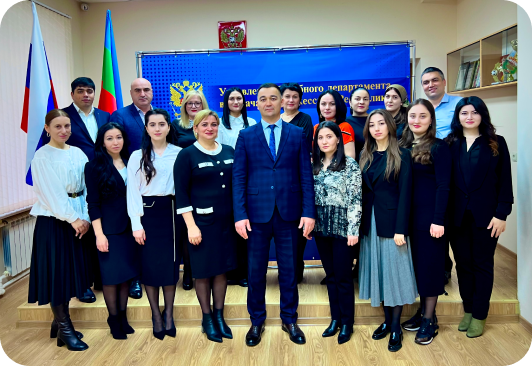

Управление Судебного департамента в Карачаево-Черкесской Республике

9 июля 1998 г. в соответствии с Федеральным законом «О Судебном департаменте при Верховном Суде
Российской Федерации» от 08.01.1998 № 7-ФЗ было образовано Управление Судебного департамента в
Карачаево-Черкесской Республике. Первым начальником Управления был назначен М.Н. Огузов. C 2001 по 2009
год Управление возглавлял Чомаев Х. А., а с июня 2009 года - Семенов Р.З., который занимал эту должность
до 2012 года. В 2012 году начальником управления стал Самоходкин С.И., а 1 марта 2017 года по сентябрь
2023 года управление Судебного департамента в Карачаево-Черкесской Республике возглавлял Чепуров В.В.
Сейчас исполняющим обязанности начальника Управления является Байрамкулов М.Х.
На Управление возложена ответственная миссия по организации обеспечения деятельности судов общей юрисдикции и органов судейского сообщества.
В настоящее время Управление состоит из отдела организационно-правового обеспечения деятельности судов, который возглавляет Докшокова Л.М.; отдела государственной службы, кадров и противодействия коррупции, бессменным руководителем которого на протяжении всех 25 лет являлась Глухова И.А., ушедшая из жизни в ноябре 2023 года; отдела финансов, бухгалтерского учета и отчетности, начальником которого является Айбазова А.И. и отдела материально-технического снабжения и капитального строительства, которым руководит Тарахов А.Б., а также 10 администраторов районных (городских) судов, которые совместно с работниками Управления ежедневно трудятся для улучшения качества отправления правосудия в нашей Республике.
В 2023 году управлению Судебного департамента в Карачаево-Черкесской Республике исполнилось 25 лет
На Управление возложена ответственная миссия по организации обеспечения деятельности судов общей юрисдикции и органов судейского сообщества.
В настоящее время Управление состоит из отдела организационно-правового обеспечения деятельности судов, который возглавляет Докшокова Л.М.; отдела государственной службы, кадров и противодействия коррупции, бессменным руководителем которого на протяжении всех 25 лет являлась Глухова И.А., ушедшая из жизни в ноябре 2023 года; отдела финансов, бухгалтерского учета и отчетности, начальником которого является Айбазова А.И. и отдела материально-технического снабжения и капитального строительства, которым руководит Тарахов А.Б., а также 10 администраторов районных (городских) судов, которые совместно с работниками Управления ежедневно трудятся для улучшения качества отправления правосудия в нашей Республике.
В 2023 году управлению Судебного департамента в Карачаево-Черкесской Республике исполнилось 25 лет